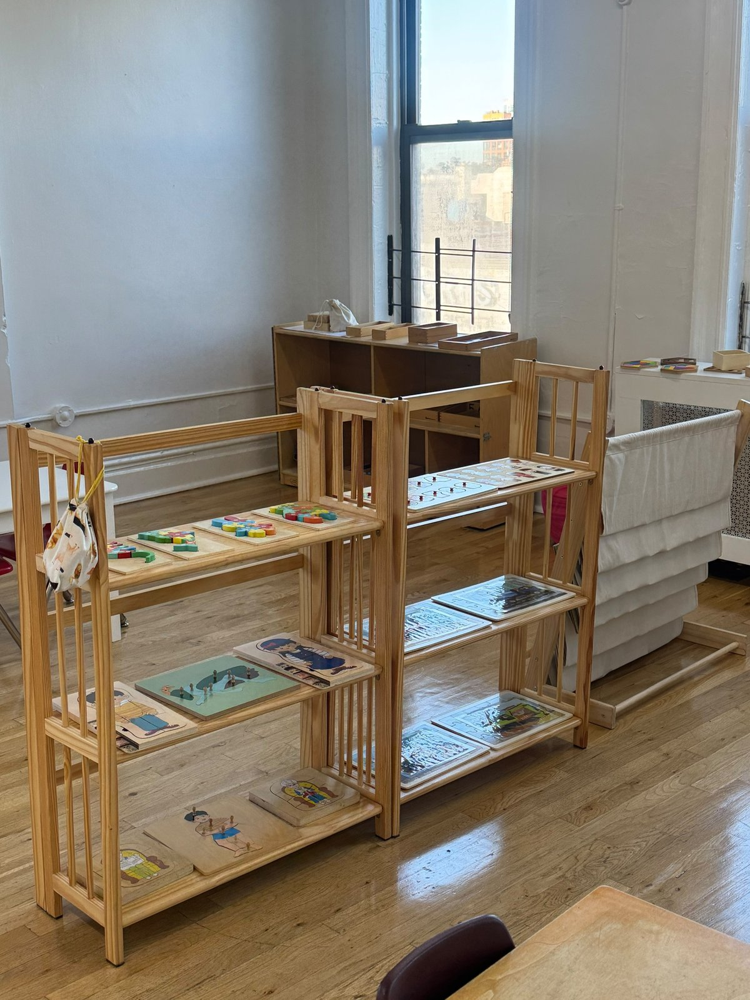

Calma
Voces suaves, rutinas claras, música clásica de fondo. Los niños se adaptan rápido porque el salón es predecible.
Nosotros
Imagine South Slope Montessori abrió en 2015 como el primer preescolar Montessori de Nueva York enseñado completamente en español. Diez años después, seguimos siendo un solo salón de edades mixtas con máximo doce niños, guiado por nuestra fundadora todos los días. La mayoría de nuestras familias hablan español en casa; algunas apenas empiezan. Todas querían un salón Montessori pequeño, cálido y de verdad, donde todo el día transcurre en español.

Nuestra filosofía
Imagine South Slope Montessori es una escuela privada que ofrece educación y cuidado en la primera infancia. Su fundamento filosófico es la obra de la Dra. Maria Montessori, llevada adelante por educadoras con formación especializada en el Método Montessori.
Nuestro enfoque es integral y busca desarrollar al niño completo, nutriendo su crecimiento cognitivo, social, emocional y físico. Creemos que los primeros años, del nacimiento a los seis, son la etapa de mayor capacidad para aprender.
Buscamos ofrecer un ambiente enriquecido y estimulante que fomente el orden, la coordinación, la concentración y la independencia, donde el niño sea un explorador activo y desarrolle autonomía y un verdadero amor por aprender.
Queremos crear un programa que reduzca el estrés en la vida del niño y maximice el equilibrio, el respeto por sí mismo y sus aptitudes innatas. Con el esfuerzo conjunto de maestras y familias, buscamos darle a cada niño un regalo para toda la vida.
Voces suaves, rutinas claras, música clásica de fondo. Los niños se adaptan rápido porque el salón es predecible.
Materiales reales, trabajo real. Verter agua, cortar plátanos, unir sonidos con letras, construir la torre rosa.
Todas las maestras hablan español con los niños todo el día. El idioma nunca es una lección: es el aire del salón.
Máximo doce niños y tres adultas. Cada niño es conocido y cada familia recibe noticias reales a la salida.
Cuando hace buen tiempo caminamos a JJ Byrne Playground. Cuando llueve, nos movemos, bailamos y hacemos yoga en el estudio.
Horarios flexibles, respuestas rápidas y conversaciones honestas sobre cómo va tu hijo o hija.
Fundadora
Fundadora, directora y maestra principal
Edith abrió Imagine South Slope Montessori en 2015 con una idea: el salón Montessori tranquilo y práctico en el que se formó, vivido completamente en español. Fue el primer programa de su tipo en Nueva York.
Una década después sigue en el salón todos los días, junto a dos maestras asistentes. Las familias la describen como cálida, paciente, infinitamente creativa y tan atenta con los adultos como con los niños.
Tres adultas están en el salón cada día, todas hablando español con los niños: Edith y dos maestras asistentes. Una maestra de música nos acompaña una vez por semana.
Nuestro espacio
Nuestro salón está en el tercer piso de Brooklyn Arts Exchange, un querido centro de artes del barrio en la 5ta Avenida: pisos de madera, ventanas altas y luz todo el día. Estantes bajos guardan los materiales Montessori a la altura de los niños, una alfombra marca el círculo, y JJ Byrne Playground está a pocos pasos.


Imagine South Slope Montessori abre en BAX, el primer preescolar Montessori de Nueva York enseñado completamente en español.
Nuestros primeros egresados llegan a kínders de doble idioma por todo Brooklyn.
Seguimos siendo un salón pequeño, guiado por Edith y completamente en español. Inscripciones abiertas.
Las visitas duran unos 30 minutos y los niños son bienvenidos. Inscribimos durante todo el año cuando hay lugar en el salón.